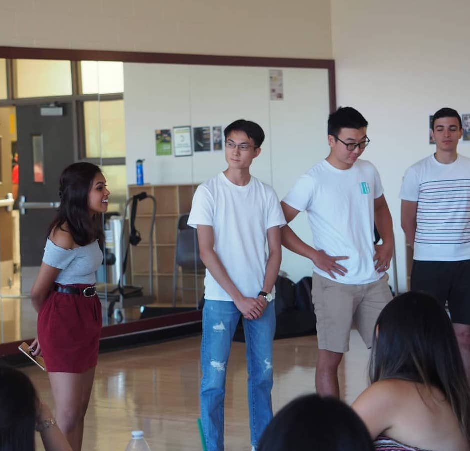

Hi there, I'm Boon Yeow!
I am a third-year computer science student studying at Arizona State Univeristy. I am from Singapore but I grew up in Guangzhou, China before moving back to Singapore. During my free time, I like to do mountain biking, hiking, and baking.

Leadership
I co-founded the Singapore Student Association in Arizona State Univerisity in 2019
to serve the Singaporean students and to help others learn more about Singapore culture. In addition I have partnered with Universities in the west coast from Berkeley, Standford, UCLA, UW, University of Arizona to host social events for Singaporean students to help students make new frirends during the pandemic.
Besides the Singapore students association, I am also a leader and facilitator for Bridges Undergrads, a Christian organization to support international students in arizona state univeristy with their needs.I facilitate family groups to help international students learn about the bible and create commnunity.